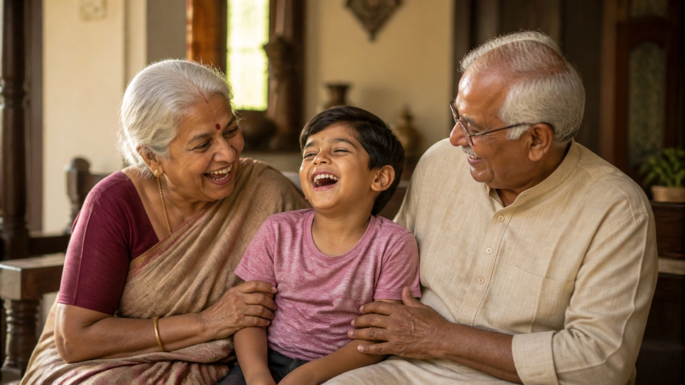

पितृ पक्ष आते ही कई प्रश्न मन में उठते हैं। पितर कौन हैं? श्राद्ध (पूर्वजों के लिए श्रद्धा से की गई विधि) और तर्पण (जल अर्पण द्वारा पूर्वजों को तृप्त करना) का वास्तविक अर्थ क्या है?
इन्हीं प्रश्नों पर ब्रह्मर्षि आचार्य उपेंद्र जी से संवाद हुआ। और एक प्रश्न सबसे गहरा था: जो लोग जीते जी अपने बुज़ुर्गों का सम्मान नहीं करते, पर उनके जाने के बाद बड़े विधि-विधान से श्राद्ध करते हैं, क्या उन्हें इसका लाभ मिलता है?
जो पास है, उसका मूल्य क्यों नहीं?
आचार्य जी कहते हैं, यह कलियुग की महिमा है। जब तक कोई वस्तु या व्यक्ति हमारे पास होता है, उसका महत्व नहीं होता। जब वह चला जाता है, तब हम उसे खोजते हैं।
माता-पिता और पूर्वजों के साथ भी यही होता है। हम अपनी कामनाओं (इच्छाओं) से इतने घिरे हैं कि उनके रहते उन्हें उतना सम्मान नहीं दे पाते।
वे प्रेम से मिलना चाहते हैं, दो बातें करना चाहते हैं। पर हमारे पास समय नहीं होता। नौकरी, बाहर जाना, बच्चों की देखभाल, पैसे की चिंता। फिर एक दिन वे अचानक चले जाते हैं।
तब मन में अकेलापन आता है, कभी डर। कोई इसे ज़िम्मेदारी मानकर श्राद्ध करता है, कोई डर से।
क्या आपके जीवन में भी कोई ऐसा है, जो आपसे बस दो बातें करना चाहता है, और आप "बाद में" कह देते हैं?
पितर कब बनते हैं?
यहाँ आचार्य जी एक गहरी बात बताते हैं। शास्त्र कहता है कि पितर योनि में हमें जाना ही नहीं है। यह तभी होता है जब कोई सुखी, आनंद की अवस्था में शरीर छोड़ता है।
बुज़ुर्ग रोगी हो सकते हैं, यह स्वाभाविक है। पर दुखी वे तब होते हैं जब घर के लोग उन्हें सुख नहीं देते, उन पर ध्यान नहीं देते। आचार्य जी कहते हैं कि ऐसी उपेक्षित अवस्था में किसी को जाना नहीं चाहिए, क्योंकि तब वे पितर बनते हैं।
देर से जागे तो भी सवेरा है
तो क्या जो देर से जागा, उसके लिए कोई रास्ता नहीं? आचार्य जी कहते हैं, जब जागो तब सवेरा।
अगर किसी की आँखें बाद में खुलीं, तो उसका बाद में श्राद्ध करना गलत नहीं है। शास्त्र कहता है कि वह अब भी सुधर सकता है। दान, पुण्य और सेवा से वह अब भी कुल-दीपक बन सकता है। जैसे वाल्या डाकू वाल्मीकि बन गए, वैसा परिवर्तन भी संभव है।
पर दो बातें याद रखनी हैं:
- श्राद्ध दिखावे के लिए न हो, "बस मेरी ज़िम्मेदारी खत्म", इस भाव से न हो।
- श्राद्ध डर से न हो।
पर देर करें ही क्यों?
सबसे बड़ा प्रश्न यही है: "देर आए दुरुस्त आए" वाली स्थिति में हम जाएँ ही क्यों? हमें जीते जी आदर्श जीवन जीना चाहिए। शास्त्र तो चिल्ला-चिल्लाकर कह रहे हैं:
मातृदेवो भव। पितृदेवो भव। आचार्यदेवो भव।
(तैत्तिरीय उपनिषद्, शिक्षावल्ली १.११.२)
अर्थात माता, पिता और आचार्य को देवता मानो।
यह शरीर भी माता-पिता ने दिया। उन्होंने ही विद्यालय भेजा, कंधे पर उठाया, आहार से लेकर हर बीमारी तक देखभाल की।
लाठी ही नहीं, आनंद भी बनो
बुढ़ापे में उनकी एक ही अपेक्षा होती है, कि संतान उनकी लाठी बने। पर आचार्य जी इससे आगे की बात कहते हैं कि संतान सिर्फ लाठी न बने, उन्हें आनंद भी दे।
उनके साथ समय बिताइए। उन्होंने हमारे लिए इतना त्याग किया है। यही पितृ ऋण है, और इसे चुकाने के लिए हमें उतना समय तो देना ही होगा।
आज आप अपने माता-पिता या बड़ों को कितना समय देते हैं, केवल ज़िम्मेदारी के रूप में, या आनंद के रूप में?

जिस घर में श्राद्ध की ज़रूरत ही न पड़े
जो परिवार ऐसा करता है, शास्त्र कहता है कि उस घर में श्राद्ध की आवश्यकता ही नहीं होगी, क्योंकि वहाँ संस्कार इतने अच्छे थे।
ऐसे परिवार अपने पूर्वजों के निमित्त बस गौ-सेवा करें, ब्राह्मणों को दान दें, या घर पर थोड़ा शास्त्र-पठन करें, तब भी उनके पूर्वज सदा मुक्त रहेंगे और पूरे परिवार को आशीर्वाद देते रहेंगे।
साधना का नियम, विज्ञान जैसा
आचार्य जी एक सुंदर उदाहरण देते हैं। विज्ञान कहता है, बटन दबाओ तो पंखा या बत्ती चलेगी ही, चाहे राजा दबाए या गरीब, संन्यासी या चोर, बूढ़ा या जवान।
वैसे ही अंतर्योग की साधनाओं की फलश्रुति (साधना का फल) त्वरित आती है, चाहे गणेश विद्या हो, श्रीविद्या हो, सरस्वती दीक्षा हो, पितृ-मुक्ति और हीलिंग की साधना हो, या शिव साधना। अधिकतर लोगों को यह फल अभी और यहीं, प्रत्यक्ष अनुभव के रूप में मिलता है।
मुख्य बातें
- जो पास है, उसका मूल्य उसके रहते पहचानिए; जाने के बाद पछतावा ही बचता है।
- पितर वे बनते हैं जो दुखी, उपेक्षित अवस्था में शरीर छोड़ते हैं।
- देर से जागे तो भी सवेरा है: बाद में किया गया श्राद्ध गलत नहीं, पर दिखावे या डर से न हो।
- मातृदेवो भव, पितृदेवो भव: जीते जी माता-पिता की सेवा ही सच्चा पितृ ऋण चुकाना है।
- बुढ़ापे की लाठी ही नहीं, उनका आनंद भी बनिए।
- जिस घर में बड़ों को सुख मिलता है, वहाँ श्राद्ध की आवश्यकता ही नहीं पड़ती; पूर्वज मुक्त रहकर आशीर्वाद देते हैं।